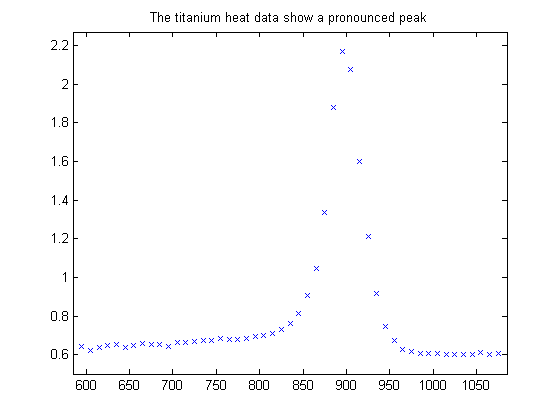
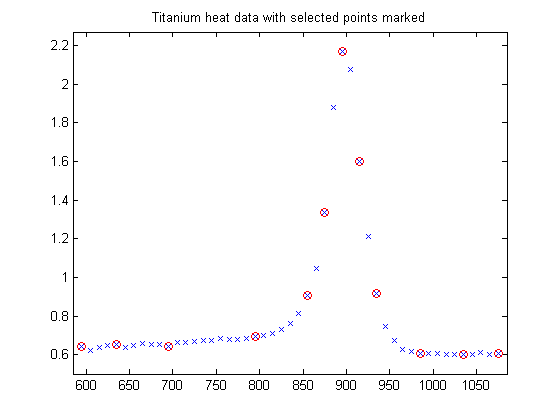
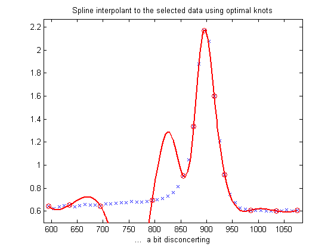
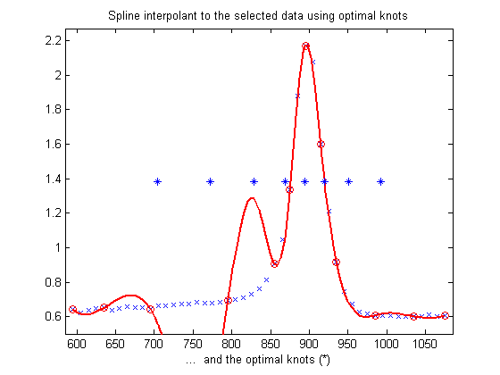
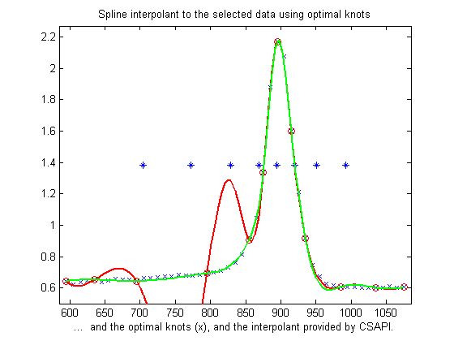
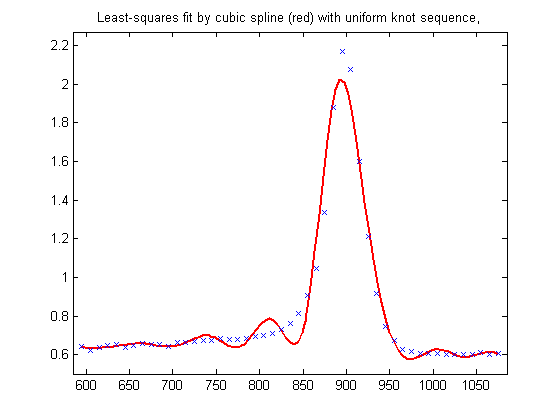
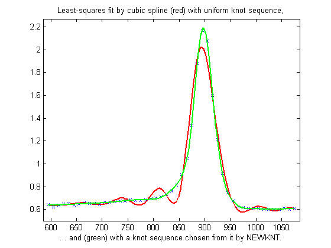

How to choose knots when you have to
Illustration of the use of OPTKNT and NEWKNT.
Copyright 1987-2003 C. de Boor and The MathWorks, Inc. $Revision: 1.18 $
Overview
Here are some sample data, much used for testing spline approximation with variable knots, the so-called Titanium Heat Data, which record some property of titanium measured as a function of temperature. Notice the rather sharp peak. We'll use this function to illustrate some methods for knot selection.
[xx,yy] = titanium; frame = [-10 10 -.1 .1]+[min(xx),max(xx),min(yy),max(yy)]; plot(xx,yy,'x'), grid off, axis(frame) title('The titanium heat data show a pronounced peak')
We pick a few data points from these somewhat rough data, since we want to interpolate. The data points picked are marked in the graph.
pick = [1 5 11 21 27 29 31 33 35 40 45 49]; tau = xx(pick); y = yy(pick); hold on plot(tau,y,'ro') title('Titanium heat data with selected points marked')
Since a spline of order k with n+k knots has n degrees of freedom, and we have 12 data sites, tau(1)< ... < tau(12), a fit with a cubic spline, i.e., a fourth order spline, requires a knot sequence t of length 12+4 .
Moreover, the knot sequence t must satisfy the Schoenberg-Whitney conditions, i.e., must be such that the i-th data site lies in the support of the i-th B-spline, i.e.,
t(i) < tau(i) < t(i+k) , all i ,
(with equality allowed only in case of a knot of multiplicity k ).
One way to choose a knot sequence satisfying all these conditions is as the optimal knots, of Gaffney/Powell and Micchelli/Rivlin/Winograd.
In o p t i m a l spline interpolation, to values at sites tau(1), ..., tau(n) say, one chooses the knots so as to minimize the constant in a standard error formula. Specifically, one chooses the first and the last data site as a k-fold knot. The remaining n-k knots are supplied by OPTKNT.
Here is the beginning of the help from OPTKNT:
%OPTKNT Optimal knot distribution. % % OPTKNT(TAU,K) returns an `optimal' knot sequence for interpolation at % data sites TAU(1), ..., TAU(n) by splines of order K. % TAU must be an increasing sequence, but this is not checked. % % OPTKNT(TAU,K,MAXITER) specifies the number MAXITER of iterations to be % tried, the default being 10. % % The interior knots of this knot sequence are the n-K sign-changes in % any absolutely constant function h ~= 0 that satisfies % % integral{ f(x)h(x) : TAU(1) < x < TAU(n) } = 0 % % for all splines f of order K with knot sequence TAU.
We try this for interpolation on our example, in which we want to interpolate by cubic splines to data (tau(i),y(i)), i=1,...,n :
k = 4; osp = spapi( optknt(tau,k), tau,y); fnplt(osp,'r'), hold on, plot(tau,y,'ro'), grid off title('Spline interpolant to the selected data using optimal knots') xlabel('... a bit disconcerting')
This is a bit disconcerting!
Here, marked by stars, are also the (interior) optimal knots:
xi = fnbrk(osp,'knots'); xi([1:k end+1-(1:k)]) = []; plot(xi,repmat((frame(3)+frame(4))/2, size(xi)),'*') xlabel('... and the optimal knots (*)')
The knot choice for optimal interpolation is designed to make the maximum over a l l functions f of the ratio norm{f - If}/norm{D^k f} of the norm of the interpolation error f - If to the norm of the k-th derivative D^k f of the interpoland as small as possible. Since our data imply that D^k f is rather large, the interpolation error near the flat part of the data is of acceptable size for such an `optimal' scheme.
Actually, for these data, the ordinary cubic spline interpolant provided by CSAPI does quite well:
cs = csapi(tau,y); fnplt(cs,'g',2) xlabel('... and the optimal knots (x), and the interpolant provided by CSAPI.') hold off
Knot choice for least squares approximation
Knots must be selected when doing least-squares approximation by splines. One approach is to use equally spaced knots to begin with, then use NEWKNT with the approximation obtained for a better knot distribution.
The next sections illustrate this with the full titanium heat data set.
Least squares approximation with uniform knot sequence
We start with a uniform knot sequence.
sp = spap2(augknt(linspace(xx(1), xx(end), 2+fix(length(xx)/4)),k),k, xx,yy); fnplt(sp,'r'), hold on, plot(xx,yy,'x'), axis(frame) title('Least-squares fit by cubic spline (red) with uniform knot sequence,')
This is not at all satisfactory. So we use NEWKNT for a spline approximation of the same order and with the same number of polynomial pieces, but better distributed:
Using NEWKNT to improve the knot distribution for these data
spgood = spap2( newknt(sp), k, xx,yy); fnplt(spgood,'g',1.5) xlabel('... and (green) with a knot sequence chosen from it by NEWKNT.') hold off
This is quite good. Incidentally, one less interior knot would not have sufficed in this case.